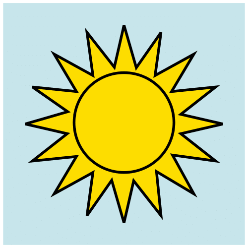
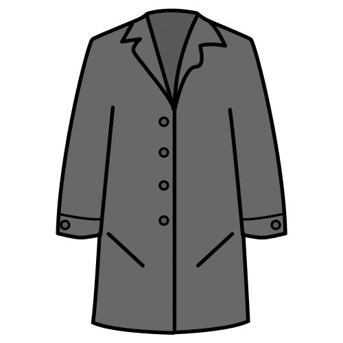
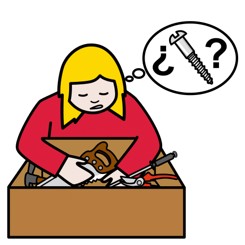
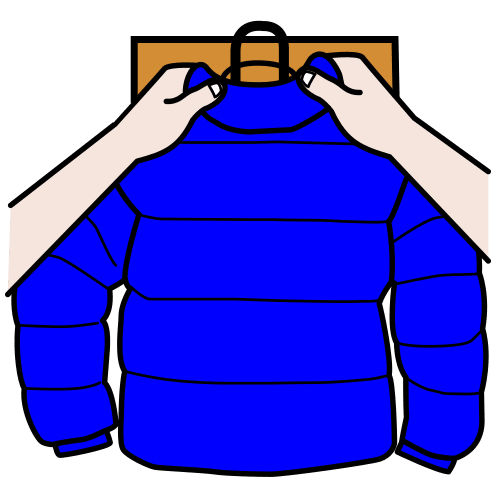
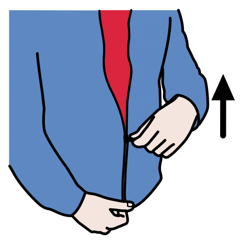
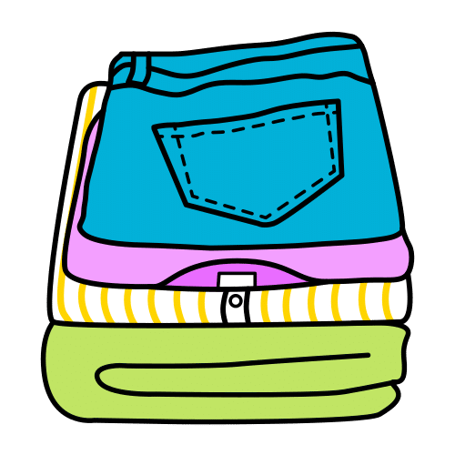
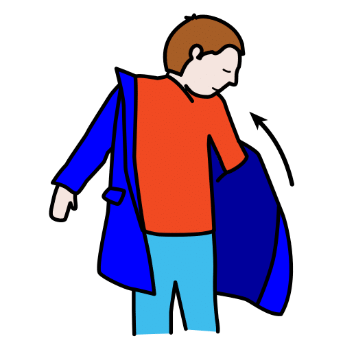

Apoyo visual · Autonomía en invierno
Rutinas
de invierno
en el cole
Lo que trae el invierno, paso a paso y con pictogramas: del perchero al recreo con lluvia.
Pictogramas: Sergio Palao. ARASAAC (Gobierno de Aragón). CC BY-NC-SA.
Licencia CC BY-NC-SA 4.0
ideducando.es
Antes de empezar
De un vistazo
Cada pieza va en un sitio de la clase, junto a su rutina. Empieza por una sola: la que más os cueste o la que más se
repite. Cuando le salga, añade otra.
Antes, mira las normas de tu cole. En algunos, el alumnado de Infantil no trae paraguas ni bufanda.
En otros, nadie se cambia de calzado al entrar. Usa solo las tiras y las tarjetas que encajen y cambia los pasos
que no con la plantilla de la página .
Para el perchero · Tamaño grande
Etiquetas para las perchas
Una para cada percha, justo encima del gancho. Antes de plastificar, escribe el nombre con letra grande y el número
de lista, y pega su foto o su símbolo de la página . Imprime al 100 %: el hueco
mide 3,2 × 3,8 cm, lo justo para una foto de carnet.
Para el perchero · Tamaño pequeño
Etiquetas pequeñas
Para la bolsa de muda, el sitio de las botas, el paragüero o su cajón. Lleva el mismo símbolo que su percha: así
reconoce lo suyo en todas partes, aunque todavía no lea su nombre.
Para las etiquetas · Para recortar
Un símbolo para cada peque
Elige un símbolo distinto para cada alumno o alumna y usa el mismo en todas sus etiquetas. Los grandes van en la
etiqueta de la percha y los pequeños, en las demás. Recórtalos y pégalos antes de plastificar.
Grandes, de 2,4 cm
Pequeños, de 1,6 cm
Pictogramas: Sergio Palao. Origen: ARASAAC (arasaac.org). Licencia CC BY-NC-SA. Propiedad: Gobierno de Aragón.
Plantilla · Dos tiras, de 4 y de 6 pasos. Escribe y pega los pictogramas o las fotos antes de plastificar.
Corta por la línea de puntos
Panel para la asamblea · Con velcro

¿Qué tiempo hace hoy?

¿Qué me pongo?
Un círculo de velcro rugoso en cada círculo gris. El suave va detrás de cada tarjeta.
Pictogramas: Sergio Palao. Origen: ARASAAC (arasaac.org). Licencia CC BY-NC-SA. Propiedad: Gobierno de Aragón.
Para el panel · Para recortar
Tarjetas del tiempo y de la ropa
Las azules dicen qué tiempo hace y las naranjas, qué ropa toca. Detrás de cada una, un círculo de velcro suave.
Pictogramas: Sergio Palao. Origen: ARASAAC (arasaac.org). Licencia CC BY-NC-SA. Propiedad: Gobierno de Aragón.
Para el panel · Para recortar
Más tarjetas de la ropa
Las cuatro en blanco son para lo que falte en vuestra clase, como el babi o unas botas de nieve: dibújalo o pega una
foto, y escribe su nombre.
Pictogramas: Sergio Palao. Origen: ARASAAC (arasaac.org). Licencia CC BY-NC-SA. Propiedad: Gobierno de Aragón.
Historia social · Para leer antes del recreo
Hoy llueve:
el recreo es en clase
Pictogramas: Sergio Palao. Origen: ARASAAC (arasaac.org). Licencia CC BY-NC-SA. Propiedad: Gobierno de Aragón.
Para el recreo en clase
¿A qué juego hoy?
Pictogramas: Sergio Palao. Origen: ARASAAC (arasaac.org). Licencia CC BY-NC-SA. Propiedad: Gobierno de Aragón.
Objetos perdidos
Todo lo que encontramos en el cole espera aquí.
-

¿Has perdido algo?Busca aquí.
-

¿Has encontrado algo?Déjalo aquí.
-
Si lleva nombre,vuelve antes a casa.
Revisamos la caja cada
Pictogramas: Sergio Palao. Origen: ARASAAC (arasaac.org). Licencia CC BY-NC-SA. Propiedad: Gobierno de Aragón.
Para las familias
El invierno en el cole
En clase aprendemos a ponernos el abrigo y a colgarlo sin ayuda. Cada peque tiene su percha, con su nombre y su
símbolo. Desde casa podéis ayudar mucho.
Su nombre, en todo
Escribid su nombre en el abrigo, el gorro, los guantes y la bufanda. También en el babi, si lo usamos. Sirve un
rotulador para tela. Si algo se pierde, con su nombre vuelve antes a casa.

Una cinta para colgar
Cosed un lazo de cinta de unos 15 cm en el cuello del abrigo y del babi. Con el lazo, lo cuelga sin ayuda.

Ropa fácil de poner
Mejor cremallera o velcro que botones pequeños. Con una anilla o una cinta en el tirador, la cremallera se coge
mejor. Las manoplas son más fáciles que los guantes de dedos.

La bolsa de muda
Si el cole os la pide, es una bolsa de tela con su nombre. Dentro va una muda: ropa interior, calcetines, pantalón y
camiseta, todo con su nombre. La bolsa se queda en el cole. Si la usamos, os damos la ropa sucia. Al día siguiente,
traed otra muda.

En casa, el truco del abrigo
Poned el abrigo en el suelo, abierto y con la capucha junto a sus pies. Mete las manos en las mangas y lo pasa por
encima de la cabeza. La tira con los pasos está en la página .
 Los días de lluvia
Los días de lluvia
Chubasquero y botas de agua, si las tiene. Preguntad en el cole si se puede traer paraguas.
Mensaje del cole
Os pedimos:
- Marcar la ropa con su nombre
- Coser una cinta para colgar
- Una bolsa con una muda
- Unas zapatillas para clase
- Una caja de pañuelos de papel
- Botas de agua los días de lluvia
Otra cosa:
Rutinas de invierno en el cole. IdEducando, noviembre de 2026. Licencia CC BY-NC-SA 4.0. Los
símbolos pictográficos utilizados son propiedad del Gobierno de Aragón y han sido creados por Sergio Palao para
ARASAAC (https://arasaac.org), que los distribuye bajo Licencia Creative Commons BY-NC-SA.
Guía para el docente
Rutinas de invierno: cómo enseñarlas
En invierno, entrar en clase y salir al patio lleva muchos más pasos. Para muchos niños y niñas de Infantil y del
primer ciclo de Primaria es la primera vez que se ponen el abrigo o se suenan la nariz sin ayuda. Este material
divide cada rutina en pasos cortos con pictogramas y da a cada peque un sitio propio para sus cosas.
Lo que hacen muchos coles
Lo hemos visto en las normas de varios colegios públicos y en una propuesta de docentes (página
):
-
Cada percha lleva el nombre y la foto o el símbolo de su dueño. El babi y el abrigo llevan su nombre y una cinta de
15 a 20 cm para colgarlos.
- Muchos piden una bolsa de tela con una muda marcada, que se queda en el aula y se cambia con la temporada.
-
Con lluvia, en unos coles un alumno o una alumna sube el paragüero a clase. En otros, en Infantil no se traen
paraguas, gorros, bufandas ni guantes, y en invierno vale la braga de cuello.
-
Los días de lluvia, el recreo de Infantil se hace en el aula con el tutor o la tutora, a veces con el apoyo de
especialistas o en el gimnasio.
-
Lo que aparece en el patio va a una caja. Al final del trimestre se avisa a las familias y lo que nadie recoge se
dona.
Antes de empezar: el perchero
- Pon las perchas a una altura a la que llegue sin ponerse de puntillas, y la etiqueta grande justo encima.
- Ordénalas por número de lista: así cada cual encuentra la suya y tú ves de un vistazo si falta algo.
- Usa el mismo símbolo en todas sus cosas. Quien todavía no lee su nombre reconoce lo suyo por el símbolo.
- Deja libre el espacio delante del perchero: el truco del abrigo necesita sitio para los brazos.
Cómo enseñar cada secuencia
Cuelga cada tira junto a su rutina, a la altura de sus ojos. Las primeras veces, hazla tú delante señalando cada
paso. Después, ayuda lo justo: espera, señala la tira y, solo si hace falta, díselo o ayúdale con tus manos.
Empieza por quitarse el abrigo, que es más fácil. Hacia los 4 años, muchos niños y niñas ya se ponen un abrigo
abierto, aunque les cuesten los botones y la cremallera (Aneurin Bevan University Health Board, 2023).
Si un paso cuesta mucho, enséñalo empezando por el final: es el encadenamiento hacia atrás (Sam y AFIRM Team, 2024).
Con la cremallera, encaja tú la pieza de abajo y deja que suba el tirador. Cuando le salga, que la encaje
también (West Suffolk NHS Foundation Trust, 2022).
Celebra el final, en la estrella «¡Hecho!». Para ponerse el abrigo, el mejor premio es salir al patio: es el ejemplo
que ponen Sam y AFIRM Team (2024).
El truco del abrigo
Lo explica, por ejemplo, el servicio de Infantil del Ayuntamiento de Wokingham, en Inglaterra: el abrigo en el suelo
con las mangas estiradas y la capucha hacia el niño o la niña, las manos en las mangas y los brazos por encima de la
cabeza (Wokingham Borough Council, 2024).
-
El abrigo va abierto, con el forro hacia arriba y la capucha junto a sus pies. Si acaba del revés, casi siempre es
porque la capucha estaba en el otro lado.
-
Practicadlo primero con un abrigo grande, por ejemplo el tuyo: la ropa holgada es más fácil (Aneurin Bevan
University Health Board, 2023).
Hay otras formas. Con el abrigo en el respaldo de una silla y el forro hacia fuera, se sienta, mete los brazos y se
levanta. O se pone primero la capucha y después mete los brazos (West Suffolk NHS Foundation Trust, 2022).
El panel del tiempo, en la asamblea
Quien tiene el encargo del tiempo mira por la ventana y pega una o dos tarjetas en «¿Qué tiempo hace hoy?». Entre
todos, decidís qué ropa toca, y antes del patio cada cual lo comprueba en su percha. Hablad de los días de sol y
frío: el sol no siempre quiere decir calor.
Conecta con dos saberes del segundo ciclo del currículo de Infantil de la Región de Murcia (Decreto 196/2022, en el
Boletín Oficial de la Región de Murcia o BORM): «Fenómenos naturales: identificación y repercusión en la vida de las
personas» (pág. 33096) y «Rutinas: planificación secuenciada de las acciones para resolver una tarea» (pág. 33084).
Sonarse la nariz
Pon los pañuelos y la papelera a su alcance, junto a la tira. En sus medidas para centros educativos, el Ministerio
de Sanidad pedía tirar los pañuelos desechables a una papelera con bolsa, mejor con tapa y pedal, y lavarse las
manos después (Ministerio de Sanidad, 2021). Su documento de diciembre de 2025 sigue pidiendo higiene respiratoria
y lavado de manos. La Asociación Española de Pediatría (AEP) cuenta
«después de sonarse los mocos» entre los momentos de lavarse las manos. Para aprender a soplar por la nariz, jugad a
mover una bolita de papel soplando solo por la nariz, con la boca cerrada.
El recreo en clase, los días de lluvia
Lee la historia «Hoy llueve: el recreo es en clase» (página ) en cuanto sepáis
que no se sale. Después, enseña el tablero «¿A qué juego hoy?» (página ): cada
cual señala o dice lo que elige. Reserva un rincón tranquilo, porque con todo el grupo dentro hay más ruido. Si
necesitan moverse, haced dos o tres pausas de «Pausas activas para todos». Quién vigila y dónde lo dicen las normas
de cada centro.
El cajón de objetos perdidos
Pon el cartel (página ) sobre una caja a la vista y a su altura. Una vez por
semana, mirad juntos lo que hay: quien reconoce lo suyo, se lo lleva. Si algo lleva nombre, avisa a su familia.
Ideas para adaptarlo
El Diseño Universal para el Aprendizaje (DUA) propone ofrecer desde el principio varias formas de presentar la
información y de participar (CAST, 2024).
- Con fotos: pega sobre los pictogramas fotos de vuestra percha o vuestro paragüero, sin niños ni niñas.
- Con objetos: antes de la tira, enséñale el abrigo o el pañuelo de verdad.
- Más pasos o menos: con la plantilla, divide un paso que cueste o junta los que ya hace sin ayuda.
- Para responder: en el panel, puede señalar la tarjeta o decir su nombre en voz alta.
- Más reto en Primaria: que dibuje sus propias tarjetas o que explique qué ropa toca y por qué.
Alumnado con trastorno del espectro del autismo (TEA)
Muchos niños y niñas con TEA notan las sensaciones de otra forma: a unos les molestan mucho y otros apenas las notan
(Ben-Sasson y otros, 2009). En invierno se nota con la ropa: la lana que pica, una etiqueta, una costura o un gorro
que aprieta.
- Pregunta a la familia qué prendas lleva bien.
- Si una prenda le molesta, buscad juntos otra que sirva para lo mismo, como la capucha en lugar del gorro.
-
Para la ropa que pica, el sistema de salud inglés (NHS) propone quitar las etiquetas, poner los calcetines del
revés, usar ropa interior sin costuras y lavar con detergente sin perfume (East of England Community Health and
Care NHS Trust, 2023).
-
Anticipa los cambios: el primer día de abrigo o de recreo en clase, enséñale antes la tira o la historia, y usad
siempre las mismas palabras.
Dificultades motoras
-
Si un brazo se mueve menos, ese brazo entra el primero al ponerse el abrigo y sale el último al quitárselo (The
Hospital for Sick Children, 2008).
-
Si le cuesta agacharse, prueba el método de la silla. En silla de ruedas, buscad con su fisioterapeuta o su
terapeuta ocupacional la forma que mejor le vaya.
-
Una anilla o una cinta en el tirador de la cremallera da algo más grande que agarrar (West Suffolk NHS Foundation
Trust, 2022). El velcro también ayuda.
-
Para quitarse las botas, que se siente: así mantiene mejor el equilibrio (East of England Community Health and Care
NHS Trust, 2023). Pon su percha en un extremo del perchero, con sitio libre a los lados.
Discapacidad intelectual
- Empieza con menos pasos: con la plantilla, deja a la vista solo los que está aprendiendo.
- Usa fotos de sus cosas, como su abrigo o su percha.
- Repetid la rutina cada día en el mismo orden y con las mismas palabras.
-
Enseña empezando por el último paso y celebra cada avance. Para anotar cómo avanza, usa el registro de pasos de
«Paso a paso».
Qué dice la evidencia
Dividir una tarea en pasos (análisis de tareas) y mostrarlos con imágenes (apoyos visuales) figuran entre las
prácticas basadas en la evidencia para el alumnado con TEA (Hume y otros, 2021). Esos estudios son con alumnado con
TEA; en clase, una tira con pasos puede ayudar también a cualquiera que esté aprendiendo una rutina.
Los textos para el alumnado siguen las pautas de lectura fácil de la norma UNE 153101:2018 EX. Aún no los hemos
validado con personas lectoras.
Fuentes y créditos
De dónde sale este material
Rutinas de invierno en el cole. Equipo IdEducando, noviembre de 2026.
ideducando.es/material-gratuito/rutinas-invierno-cole. Fuentes consultadas el 4/11/2026.
Vestirse y desvestirse
- Wokingham Borough Council (2024). Dressing and undressing: Top Tips. wsh.wokingham.gov.uk
- West Suffolk NHS Foundation Trust (2022). Worksheet I: Dressing. wsh.nhs.uk
- East of England Community Health and Care NHS Trust (2023). Getting dressed. cambspborochildrenshealth.nhs.uk
- Aneurin Bevan University Health Board (2023). Dressing. abuhb.nhs.wales
- The Hospital for Sick Children (2008). I Can Do It Myself! Dressing and other daily living skills for children with one-arm weakness. Toronto.
Salud
-
Ministerio de Sanidad (2021). Medidas de prevención, higiene y promoción de la salud frente a COVID-19 para
centros educativos en el curso 2021-2022, medidas de prevención personal, punto 4.
- Ministerio de Sanidad (2025). Documento marco para el control de las infecciones respiratorias agudas.
- Asociación Española de Pediatría (AEP). En Familia: Lavado de manos. aeped.es/enfamilia
Currículo y evidencia
- Decreto 196/2022, de 3 de noviembre, currículo de Educación Infantil de la Región de Murcia. BORM n.º 255, de 4 de noviembre de 2022, págs. 33083, 33084 y 33096.
- Sam, A. y AFIRM Team (2024). Task Analysis. Universidad de Carolina del Norte. afirm.fpg.unc.edu
- Hume, K. y otros (2021). Evidence-based practices for children, youth, and young adults with autism: Third generation review. Journal of Autism and Developmental Disorders, 51(11), 4013-4032.
- Ben-Sasson, A. y otros (2009). A meta-analysis of sensory modulation symptoms in individuals with autism spectrum disorders. Journal of Autism and Developmental Disorders, 39(1), 1-11.
- CAST (2024). Universal Design for Learning Guidelines version 3.0. udlguidelines.cast.org
- UNE 153101:2018 EX. Lectura Fácil. Pautas y recomendaciones para la elaboración de documentos.
Cómo lo hacen los coles
Normas de Infantil de los colegios públicos La Cala (Benidorm), María Moliner, El Trinquet, Cristo de la Paz y
Antonio García López (Comunitat Valenciana), Libertad, María del Mar Camarena y José María del Moral (Castilla-La
Mancha) y Calvo Sotelo (Madrid), en sus webs. Molina, M. T. y otras (2009). Propuesta
de actividades para el período de adaptación en Educación Infantil. Innovación y Experiencias Educativas, 22.
Pictogramas, dibujos y licencia
Los pictogramas son de ARASAAC, el Centro Aragonés para la Comunicación Aumentativa y Alternativa. Su licencia pide
citar este texto: «Los símbolos pictográficos utilizados son
propiedad del Gobierno de Aragón y han sido creados por Sergio Palao para ARASAAC (https://arasaac.org), que los
distribuye bajo Licencia Creative Commons BY-NC-SA». Con pictogramas de
ARASAAC, este material no se puede vender. El resto de los dibujos son de IdEducando. Licencia CC BY-NC-SA 4.0:
puedes copiarlo y adaptarlo citando a IdEducando, sin fines comerciales y con la misma licencia.